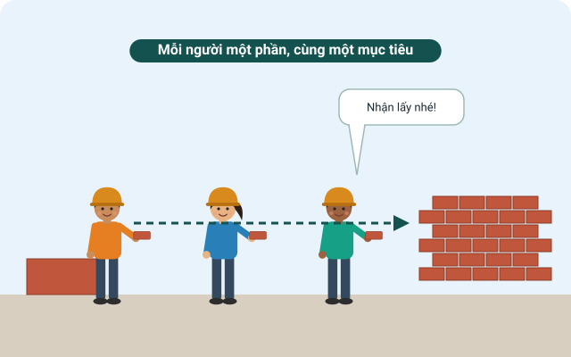
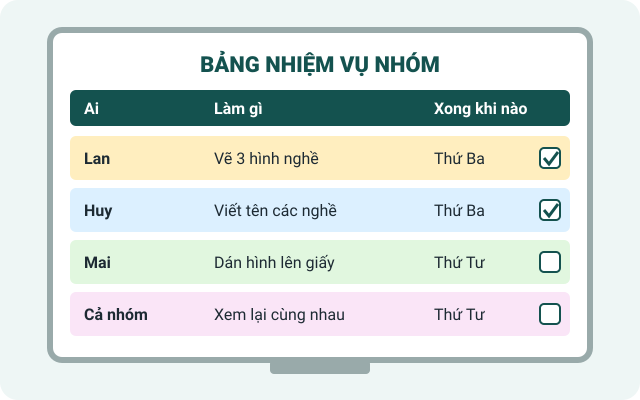
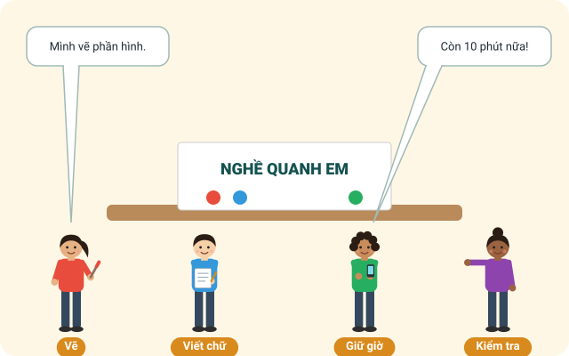

K8 · Làm việc nhóm và tôn trọng khác biệt › Bậc 1 Làm quen
Cùng nhau hoàn thành nhiệm vụ
Dành cho người lớn. Bài này có một nhiệm vụ thật: cả nhóm làm áp phích "Nghề quanh em". Áp phích sẽ dùng lại ở Bài 7.
- Chuẩn bị: giấy khổ lớn (A3 hoặc giấy bìa), bút màu, hồ dán, các Thẻ nghề, mẫu Bảng nhiệm vụ.
- Nhóm: 2–4 trẻ (anh chị em, bạn hàng xóm, hoặc một nhóm ở lớp). Nhà chỉ có một trẻ thì bố mẹ làm thành viên nhóm.
- Thời gian: đọc bài 15–20 phút. Làm áp phích thêm khoảng 30 phút, có thể làm hôm sau.
- Hãy để trẻ tự chia việc. Bạn chỉ hỏi gợi ý: "Phần này ai làm? Xong lúc mấy giờ?"
1. Mục tiêu
- Cùng nhóm lập Bảng nhiệm vụ: ai, làm gì, xong khi nào.
- Làm xong phần việc của mình và hỏi khi cần giúp.
2. Khởi động truy xuất
- Định kiến giới về nghề là gì?
- Đổi câu "Con gái không làm thợ điện được" thành một câu hỏi.
Đáp án
- Là suy nghĩ rằng một nghề chỉ hợp với con trai, hoặc chỉ hợp với con gái.
- Ví dụ: "Thợ điện cần kỹ năng gì?"
Xem lại: Ai cũng có thể làm nghề này.
3. Giải thích
Hầu hết các nghề đều làm việc cùng người khác. Đội thợ xây chuyền gạch cho nhau. Bếp ăn có người nấu, người chia cơm, người rửa bát.

Nhóm làm tốt khi có 3 điều:
- Một mục tiêu chung. Ai cũng biết nhóm cần làm ra cái gì.
- Mỗi người một phần rõ ràng. Không ai làm trùng, không phần nào bị bỏ sót.
- Giúp nhau khi cần. Bạn gặp khó thì cả nhóm cùng gỡ.
Công cụ đơn giản nhất là Bảng nhiệm vụ có 3 cột: Ai – Làm gì – Xong khi nào. Mỗi việc chỉ ghi một người phụ trách. Như vậy ai cũng biết phần mình.

Nhóm có thể thêm vai nhỏ. Người giữ giờ nhắc nhóm còn bao nhiêu thời gian. Người kiểm tra xem lại sản phẩm trước khi nộp.
Làm nhóm 4 bước
- Nói rõ mục tiêuNhóm cần làm ra cái gì?
- Lập Bảng nhiệm vụAi – Làm gì – Xong khi nào.
- Làm phần mìnhGặp khó thì hỏi sớm.
- Ghép và xem lạiCả nhóm cùng kiểm tra, sửa.
4. Ví dụ tại nơi làm việc Việt Nam
Tình huống giả định. Ba anh em họ làm áp phích "Nghề quanh em" cho Ngày hội của nhà: Tí (lớp 5), Na (lớp 3) và Bin (lớp 1).
Ba bạn lập Bảng nhiệm vụ trước khi làm:
| Ai | Làm gì | Xong khi nào |
|---|---|---|
| Bin | Tô màu 3 hình nghề | 4 giờ |
| Na | Dán Thẻ nghề lên giấy | 4 giờ 30 |
| Tí | Viết tiêu đề, làm người giữ giờ | 5 giờ |
| Cả nhóm | Xem lại cùng nhau | 5 giờ |
Giữa chừng, Bin hết bút đỏ. Na chia bút cho Bin dùng chung. Tí nhắc: "Còn 10 phút nữa!" Năm giờ, cả nhóm cùng xem lại và dán thêm một thẻ bị sót.

Vì sao cách này tốt: mỗi người một phần vừa sức. Bin nhỏ nhất làm việc tô màu. Có người giữ giờ. Khi bạn thiếu đồ, nhóm chia sẻ ngay. Bước xem lại cùng nhau tìm ra phần bị sót.
5. Thực hành
Cùng nhóm làm áp phích "Nghề quanh em", dùng các Thẻ nghề đã có. Lập Bảng nhiệm vụ trước khi bắt đầu.
Nếu chưa làm áp phích được, em chọn một việc nhà cần nhiều người. Ví dụ: dọn mâm cơm tối.
Gợi ý 1
Chia việc theo sức. Em nhỏ làm việc đơn giản. Anh chị lớn làm việc cần viết nhiều.
Gợi ý 2
Mỗi việc chỉ ghi một người. Nếu nhiều người cùng làm, chọn một người chịu trách nhiệm chính.
Lời giải mẫu (dọn mâm cơm tối)
| Ai | Làm gì | Xong khi nào |
|---|---|---|
| Lan | Lau bàn | 6 giờ 15 |
| Huy | Xếp bát đũa | 6 giờ 20 |
| Mẹ | Bưng thức ăn ra bàn | 6 giờ 25 |
| Cả nhà | Ngồi vào bàn | 6 giờ 30 |
Đồng đội tốt làm 4 việc
6. Tự kiểm tra
Chọn đáp án. Mỗi lựa chọn đều có giải thích.
Câu 1. Trong Bảng nhiệm vụ, việc "Viết tiêu đề" ghi người làm là "cả nhóm". Vấn đề là gì?
-
Đúng. Đúng. Mỗi việc nên có một người phụ trách chính.
-
Chưa đúng. Khi ai cũng làm, rất dễ thành không ai làm.
-
Chưa đúng. Tiêu đề là một phần của áp phích, cần có người phụ trách.
Câu 2. Bé Bin lớp 1 làm nhóm với anh chị lớp 5. Chia việc thế nào là hợp?
-
Chưa đúng. Việc quá sức dễ làm Bin nản và nhóm bị chậm.
-
Đúng. Đúng. Chia việc theo sức giúp ai cũng làm xong phần mình.
-
Chưa đúng. Mỗi thành viên đều nên có một phần việc.
Câu 3. Đang làm, bạn em hết bút màu. Đồng đội tốt sẽ làm gì?
-
Đúng. Đúng. Chia sẻ đồ dùng giúp cả nhóm không bị chậm.
-
Chưa đúng. Phần của bạn chậm thì cả nhóm cũng chậm.
-
Chưa đúng. Làm thay mà không hỏi dễ gây trùng việc và buồn lòng.
Câu 4. Người giữ giờ trong nhóm làm gì?
-
Đúng. Đúng. Nhờ vậy nhóm biết cần làm nhanh hơn hay không.
-
Chưa đúng. Mỗi người vẫn làm phần của mình.
-
Chưa đúng. Người giữ giờ không chấm điểm ai.
Câu 5. Ôn Bài 3. Một nghề có thể do cả nam và nữ làm, nếu người đó…
-
Đúng. Đúng. Nghề cần kỹ năng, không cần là con trai hay con gái.
-
Chưa đúng. Đây là định kiến giới về nghề.
-
Chưa đúng. Tuổi không phải điều kiện chính, kỹ năng mới là điều quan trọng.
7. Phản tư
Người lớn hỏi, em trả lời bằng lời. Site không lưu gì.
- Hôm nay phần việc của em là gì? Em đã làm xong chưa?
- Lúc nào nhóm cần giúp nhau? Ai đã giúp, giúp thế nào?
8. Áp dụng thật
Trong 7 ngày tới, dùng Bảng nhiệm vụ cho một việc nhà hoặc một bài nhóm ở lớp. Kể lại cho người lớn: nhóm có xong đúng giờ không?
Nối kiến thức. Cột "Xong khi nào" dẫn sang Bài 5: nhận việc và giữ hẹn. Ở Bài 7, em dùng lại Bảng nhiệm vụ để chuẩn bị Ngày hội. Ở Bài 3, em đã biết: chia việc theo khả năng, không theo con trai hay con gái.
Học tiếp khi lớn hơn: bài Chia việc trong dự án nhóm bằng bảng phân công (nhóm N2) thêm cột "đầu ra" và mốc kiểm tra. Thái độ hợp tác, như một phẩm chất, được bàn ở daynentang.com.
9. Siêu dữ liệu
| skill | K8 · Làm việc nhóm và tôn trọng khác biệt |
|---|---|
| level | Bậc 1 · Làm quen |
| group | N1 |
| framework_map | CSfW: 2b Connect and work with others; 2c Recognise and utilise diverse perspectives; SkillsFuture CCS: Collaboration; NACE: Teamwork; LifeComp: S3 Collaboration (chỉ dẫn chiếu) |
| updated | 2026-11-14 |
Hoàn thành bài
Đánh dấu đã học để site gợi ý lịch ôn sau 1, 3 và 7 ngày. Dữ liệu chỉ lưu trên máy của bạn.
Lịch ôn gợi ý: